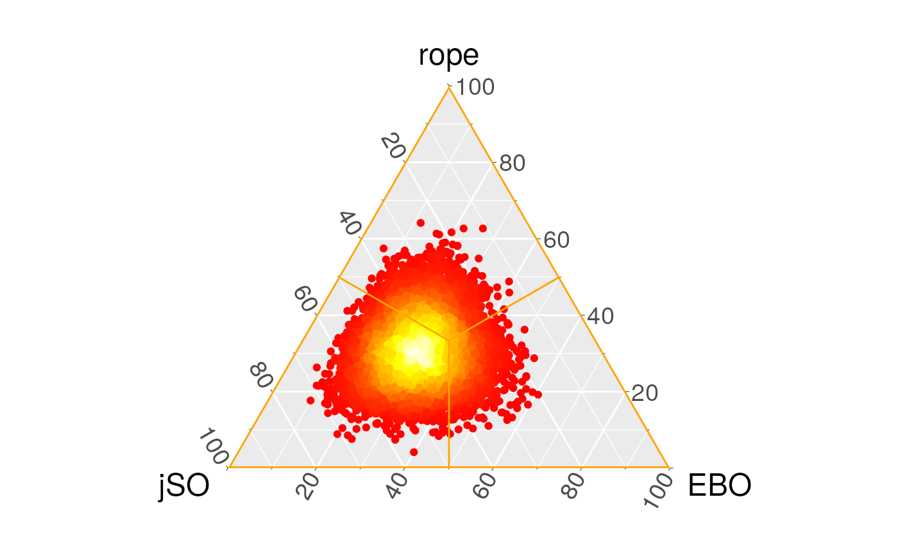

Statistical Analysis
StatisticalAnalysis.RmdThis vignette comprehends a statistical analysis of the case of study of the CEC’17 Special Session and Competition on Single Objective Real Parameter Numerical Optimization can be illustrated. The results have been included in the package as a dataset.
- We will mainly use two data sets, one with all the results (all iterations of the execution of all the algorithms in all benchmark functions for all dimensions), , and the mean data set (which aggregates the results among the iterations), .
- In most of the pairwise comparisons we have involved EBOwithCMAR and jSO algorithms, as they are the best classified algorithms in the competition.
- The used data shows the mean among different iterations of the results obtained at the end of all of the steps of each algorithm on each benchmark function for the 10 Dimension scenario.
- The tables included in this section are obtained with the function of the package used, which is helpful to highlight the rejected hypotheses by emboldening the associated \(p\)-values.
Parametric analysis
Preliminars
Traditionally the statistical tests applied to the comparison of different algorithms belonged to the parametric family of tests. We start the statistical analysis of the results with these kinds of tests and the study of the conditions in order to use them safely.
The traditional parametric test used in the context of a comparison of multiple algorithms over multiple problems (benchmarks) is the ANOVA test. This test makes some assumptions that should be checked before it is performed:
- The distribution of the results for each algorithm among different benchmarks follows a Gaussian distribution.
- The standard deviation of results among groups is equal.
shapiro.test <- split(cec17.final, cec17.final$Dimension) %>%
lapply(function(x) split(x, x$Algorithm) %>%
lapply(function(y) shapiro.test(y$Result)$p.value)) %>%
unlist() %>% matrix(ncol = 4) %>% as.data.frame()
AdjustFormatTable(shapiro.test,
colnames = paste("Dim.", levels(cec17.final$Dimension)),
rownames = levels(cec17.final$Algorithm), print.code = FALSE,
digits = -2)| Dim. 10 | Dim. 30 | Dim. 50 | Dim. 100 | |
|---|---|---|---|---|
| DES | \(\mathbf{1.40 \cdot 10^{-11}}\) | \(\mathbf{6.37 \cdot 10^{-08}}\) | \(\mathbf{1.36 \cdot 10^{-11}}\) | \(\mathbf{3.85 \cdot 10^{-08}}\) |
| DYYPO | \(\mathbf{7.62 \cdot 10^{-09}}\) | \(\mathbf{2.35 \cdot 10^{-11}}\) | \(\mathbf{3.67 \cdot 10^{-11}}\) | \(\mathbf{1.68 \cdot 10^{-11}}\) |
| IDEN | \(\mathbf{3.15 \cdot 10^{-06}}\) | \(\mathbf{4.24 \cdot 10^{-08}}\) | \(\mathbf{1.59 \cdot 10^{-11}}\) | \(\mathbf{1.21 \cdot 10^{-10}}\) |
| jSO | \(\mathbf{1.28 \cdot 10^{-06}}\) | \(\mathbf{1.42 \cdot 10^{-07}}\) | \(\mathbf{1.40 \cdot 10^{-11}}\) | \(\mathbf{9.00 \cdot 10^{-09}}\) |
| LSSPA | \(\mathbf{3.97 \cdot 10^{-06}}\) | \(\mathbf{1.67 \cdot 10^{-06}}\) | \(\mathbf{5.58 \cdot 10^{-08}}\) | \(\mathbf{2.29 \cdot 10^{-08}}\) |
| MM | \(\mathbf{1.51 \cdot 10^{-11}}\) | \(\mathbf{1.68 \cdot 10^{-07}}\) | \(\mathbf{1.40 \cdot 10^{-11}}\) | \(\mathbf{7.61 \cdot 10^{-07}}\) |
| MOS11 | \(\mathbf{3.38 \cdot 10^{-10}}\) | \(\mathbf{3.75 \cdot 10^{-10}}\) | \(\mathbf{1.51 \cdot 10^{-10}}\) | \(\mathbf{1.89 \cdot 10^{-09}}\) |
| MOS12 | \(\mathbf{2.16 \cdot 10^{-11}}\) | \(\mathbf{2.42 \cdot 10^{-08}}\) | \(\mathbf{3.64 \cdot 10^{-11}}\) | \(\mathbf{2.79 \cdot 10^{-10}}\) |
| MOS13 | \(\mathbf{1.09 \cdot 10^{-10}}\) | \(\mathbf{2.82 \cdot 10^{-09}}\) | \(\mathbf{3.03 \cdot 10^{-11}}\) | \(\mathbf{9.56 \cdot 10^{-11}}\) |
| PPSO | \(\mathbf{7.57 \cdot 10^{-09}}\) | \(\mathbf{1.77 \cdot 10^{-10}}\) | \(\mathbf{3.32 \cdot 10^{-10}}\) | \(\mathbf{4.49 \cdot 10^{-11}}\) |
| RBI | \(\mathbf{4.75 \cdot 10^{-09}}\) | \(\mathbf{2.12 \cdot 10^{-07}}\) | \(\mathbf{5.75 \cdot 10^{-11}}\) | \(\mathbf{2.07 \cdot 10^{-10}}\) |
| TFL | \(\mathbf{4.47 \cdot 10^{-11}}\) | \(\mathbf{7.50 \cdot 10^{-11}}\) | \(\mathbf{2.41 \cdot 10^{-09}}\) | \(\mathbf{1.58 \cdot 10^{-11}}\) |
| LSCNE | \(\mathbf{2.17 \cdot 10^{-11}}\) | \(\mathbf{2.20 \cdot 10^{-07}}\) | \(\mathbf{1.39 \cdot 10^{-11}}\) | \(\mathbf{1.95 \cdot 10^{-08}}\) |
| EBO | \(\mathbf{2.87 \cdot 10^{-06}}\) | \(\mathbf{1.21 \cdot 10^{-07}}\) | \(\mathbf{2.70 \cdot 10^{-08}}\) | \(\mathbf{1.39 \cdot 10^{-11}}\) |
In this table we gather the \(p\)-values associated with the normality of each group of mean results for an algorithm in a dimension scenario. All the null hypotheses are rejected because the \(p\)-values are less than \(0.05\), which means that we reject that the distribution of the mean results for each benchmark function follow a normal distribution. This conclusion could be expected because of the different difficulty of the benchmark functions in higher dimension scenarios. This is marked with boldface in subsequent tables.
In some circumstances like the Multi-Objective Optimization we need to include different measures in the comparison. We will now consider the results of the different dimensions as if they were different measures in the same benchmark function. Then, in order to perform the Hotelling’s \(T^2\) test we first check the normality of the population with the multivariate generalization of Shapiro-Wilk’s test. The following table shows that the normality hypothesis is rejected for every algorithm. Therefore, we stop the parametric analysis of the results here because the assumptions of parametric tests are not satisfied.
| p-value | |
|---|---|
| DES | \(\mathbf{5.08 \cdot 10^{-21}}\) |
| DYYPO | \(\mathbf{7.67 \cdot 10^{-31}}\) |
| IDEN | \(\mathbf{6.54 \cdot 10^{-26}}\) |
| jSO | \(\mathbf{3.82 \cdot 10^{-24}}\) |
| LSSPA | \(\mathbf{1.96 \cdot 10^{-16}}\) |
| MM | \(\mathbf{2.64 \cdot 10^{-21}}\) |
| MOS11 | \(\mathbf{4.48 \cdot 10^{-27}}\) |
| MOS12 | \(\mathbf{1.84 \cdot 10^{-26}}\) |
| MOS13 | \(\mathbf{7.50 \cdot 10^{-30}}\) |
| PPSO | \(\mathbf{1.38 \cdot 10^{-29}}\) |
| RBI | \(\mathbf{2.21 \cdot 10^{-24}}\) |
| TFL | \(\mathbf{5.03 \cdot 10^{-29}}\) |
| LSCNE | \(\mathbf{3.61 \cdot 10^{-23}}\) |
| EBO | \(\mathbf{3.49 \cdot 10^{-23}}\) |
Non-parametric tests
In this subsection we perform the most popular tests in the field of the comparison of optimization algorithms. We continue using the aggregated results across the different runs at the end of the iterations, except for the Page test for the study of the convergence.
Classic tests
Pairwise comparison
First, we perform the non-parametric pairwise comparisons with the Sign, Wilcoxon and Wilcoxon Rank-Sum tests for the 10 dimension scenario. The hypotheses of the equality of the medians is only rejected by the Wilcoxon Rank-Sum test, and we can see in the following table how for example Wilcoxon’s statistics \(R+\) and \(R-\) are similar, which means that there is no significant difference between the ranking of the observations where one algorithm outperforms the other. Then, the next step requires all the different algorithms in the competition to be involved in the comparison.
Multiple comparison
| Dim. 10 | Dim. 30 | Dim. 50 | Dim. 100 | |
|---|---|---|---|---|
| Friedman | \(\mathbf{8.45 \cdot 10^{-11}}\) | \(\mathbf{1.21 \cdot 10^{-10}}\) | \(\mathbf{1.41 \cdot 10^{-10}}\) | \(\mathbf{1.29 \cdot 10^{-10}}\) |
| Friedman AR | \(\mathbf{0.00 \cdot 10^{+00}}\) | \(\mathbf{0.00 \cdot 10^{+00}}\) | \(\mathbf{0.00 \cdot 10^{+00}}\) | \(\mathbf{0.00 \cdot 10^{+00}}\) |
| Iman-Davenport | \(\mathbf{0.00 \cdot 10^{+00}}\) | \(\mathbf{0.00 \cdot 10^{+00}}\) | \(\mathbf{0.00 \cdot 10^{+00}}\) | \(\mathbf{0.00 \cdot 10^{+00}}\) |
| Quade | \(\mathbf{3.26 \cdot 10^{-36}}\) | \(\mathbf{6.60 \cdot 10^{-62}}\) | \(\mathbf{1.55 \cdot 10^{-54}}\) | \(\mathbf{1.69 \cdot 10^{-62}}\) |
We can see in this table how the tests that involve multiple algorithms reject the null hypotheses, that is, the equivalence of the medians of the results of the different benchmarks. We must keep in mind that a comparison between thirteen algorithms is not the recommended procedure if we want to compare our proposal. We should only include the state-of-the-art algorithms in the comparison, because the inclusion of an algorithm with lower performance could lead to the rejection of the null hypothesis, not due to the differences between our algorithm and the comparison group, but because of the differences between this dummy algorithm and the others.
Post-hoc tests
Then, we proceed to perform the post-hoc tests in order to determine the location of the differences between these algorithms. We use the modification of the classic non-parametric tests to obtain the \(p\)-value associated with each hypothesis, although we should adjust these \(p\)-values with a post-hoc procedure.
Control algorithm
To illustrate this, we first suppose that we are in a One versus all scenario where we are presenting our algorithm (we will use EBOwithCMAR, the winner of the CEC’17 competition). The possible approach here, as in the rest of the analysis is:
- Considering all the results in the different dimensions as if they were different function or benchmarks, we would only obtain a single \(p\)-value for the comparison between EBO-CMAR with each contestant algorithm. The adjusted \(p\)-values are shown in the following table for the Friedman, Friedman Aligned-Rank and Quade test. Here we see that there is not much difference between the different tests and that differences are found in the comparison with DYYPO, IDEN, MOS, PPSO, RBI and TFL, although the sign of these differences need to be checked in the raw data.
| Algorithm | Friedman | FriedmanAR | Quade |
|---|---|---|---|
| DES | 0.264769595206217 | 0.264769595206217 | 0.9921639370694 |
| DYYPO | 0 | 0 | 0.000287772511504802 |
| IDEN | 0.00201830829496519 | 0.00201830829496519 | 0.747823562648854 |
| jSO | 0.927041078646202 | 0.927041078646202 | 0.992233063187013 |
| LSSPA | 0.739935381323557 | 0.739935381323557 | 0.992233063187013 |
| MM | 0.808377985241051 | 0.808377985241051 | 0.992233063187013 |
| MOS11 | 0 | 0 | 0.00128038175513479 |
| MOS12 | 0 | 0 | 1.71297300646245e-05 |
| MOS13 | 0 | 0 | 0.000650336213055214 |
| PPSO | 0 | 0 | 0.00128038175513479 |
| RBI | 0.0121961510181453 | 0.0121961510181453 | 0.747823562648854 |
| TFL | 0 | 0 | 4.7961728694812e-05 |
| LSCNE | 0.927041078646202 | 0.927041078646202 | 0.992233063187013 |
| EBO | NA | NA | NA |
-
If we wanted to show that the differences between the algorithms also persist in each group of results obtained across the different dimensions, we should perform these tests repeatedly and apply the appropiate post-hoc procedure later. In the following table we show the adjusted \(p\)-value obtained.
Di m 10 Di m 30 Di m 50 Di m 100 DES \(\mathbf{9.27 \cdot 10^{-04}}\) \(2.20 \cdot 10^{-01}\) \(\mathbf{1.65 \cdot 10^{-04}}\) \(6.46 \cdot 10^{-01}\) DYYPO \(\mathbf{5.13 \cdot 10^{-07}}\) \(\mathbf{1.66 \cdot 10^{-11}}\) \(8.10 \cdot 10^{-01}\) \(\mathbf{0.00 \cdot 10^{+00}}\) IDEN \(8.69 \cdot 10^{-01}\) \(2.14 \cdot 10^{-01}\) \(4.65 \cdot 10^{-01}\) \(\mathbf{4.81 \cdot 10^{-07}}\) jSO \(8.75 \cdot 10^{-01}\) \(9.32 \cdot 10^{-01}\) \(\mathbf{1.89 \cdot 10^{-05}}\) \(\mathbf{2.02 \cdot 10^{-02}}\) LSSPA \(5.87 \cdot 10^{-01}\) \(9.32 \cdot 10^{-01}\) \(\mathbf{1.95 \cdot 10^{-07}}\) \(7.68 \cdot 10^{-01}\) MM \(9.32 \cdot 10^{-01}\) \(8.07 \cdot 10^{-01}\) \(\mathbf{5.24 \cdot 10^{-03}}\) \(\mathbf{2.71 \cdot 10^{-02}}\) MOS11 \(\mathbf{2.68 \cdot 10^{-04}}\) \(\mathbf{2.63 \cdot 10^{-08}}\) \(9.14 \cdot 10^{-01}\) \(\mathbf{1.66 \cdot 10^{-11}}\) MOS12 \(\mathbf{0.00 \cdot 10^{+00}}\) \(\mathbf{1.04 \cdot 10^{-14}}\) \(1.62 \cdot 10^{-01}\) \(\mathbf{0.00 \cdot 10^{+00}}\) MOS13 \(\mathbf{6.58 \cdot 10^{-09}}\) \(\mathbf{4.47 \cdot 10^{-11}}\) \(5.49 \cdot 10^{-01}\) \(\mathbf{4.09 \cdot 10^{-13}}\) PPSO \(\mathbf{3.49 \cdot 10^{-05}}\) \(\mathbf{2.95 \cdot 10^{-09}}\) \(5.51 \cdot 10^{-01}\) \(\mathbf{0.00 \cdot 10^{+00}}\) RBI \(\mathbf{3.63 \cdot 10^{-02}}\) \(1.76 \cdot 10^{-01}\) \(\mathbf{2.90 \cdot 10^{-02}}\) \(\mathbf{7.31 \cdot 10^{-03}}\) TFL \(\mathbf{2.45 \cdot 10^{-09}}\) \(\mathbf{6.14 \cdot 10^{-11}}\) \(5.51 \cdot 10^{-01}\) \(\mathbf{0.00 \cdot 10^{+00}}\) LSCNE \(2.83 \cdot 10^{-01}\) \(9.32 \cdot 10^{-01}\) \(\mathbf{3.96 \cdot 10^{-05}}\) \(1.83 \cdot 10^{-01}\) EBO NA NA NA NA
\(n\) versus \(n\) scenario
In the scenario of the statistical analysis of the results obtained during a competition, we do not focus on the comparison of the results of a single algorithm, rather we would make all the posible pairs, and therfore we would not use the control algorithm.
| DES | DYYPO | IDEN | jSO | LSSPA | MM | MOS11 | MOS12 | MOS13 | PPSO | RBI | TFL | LSCNE | EBO | |
|---|---|---|---|---|---|---|---|---|---|---|---|---|---|---|
| DES | NA | \(9.99 \cdot 10^{-01}\) | \(2.16 \cdot 10^{-01}\) | \(1.69 \cdot 10^{-01}\) | \(7.68 \cdot 10^{-01}\) | \(5.70 \cdot 10^{-02}\) | \(1.00 \cdot 10^{+00}\) | \(\mathbf{9.02 \cdot 10^{-05}}\) | \(8.56 \cdot 10^{-01}\) | \(1.00 \cdot 10^{+00}\) | \(1.00 \cdot 10^{+00}\) | \(7.47 \cdot 10^{-01}\) | \(9.88 \cdot 10^{-01}\) | \(\mathbf{4.02 \cdot 10^{-03}}\) |
| DYYPO | \(9.99 \cdot 10^{-01}\) | NA | \(\mathbf{8.41 \cdot 10^{-04}}\) | \(\mathbf{5.53 \cdot 10^{-04}}\) | \(\mathbf{1.37 \cdot 10^{-02}}\) | \(\mathbf{9.65 \cdot 10^{-05}}\) | \(1.00 \cdot 10^{+00}\) | \(5.48 \cdot 10^{-02}\) | \(1.00 \cdot 10^{+00}\) | \(1.00 \cdot 10^{+00}\) | \(6.38 \cdot 10^{-01}\) | \(1.00 \cdot 10^{+00}\) | \(8.88 \cdot 10^{-02}\) | \(\mathbf{2.34 \cdot 10^{-06}}\) |
| IDEN | \(2.16 \cdot 10^{-01}\) | \(\mathbf{8.41 \cdot 10^{-04}}\) | NA | \(1.00 \cdot 10^{+00}\) | \(1.00 \cdot 10^{+00}\) | \(1.00 \cdot 10^{+00}\) | \(9.71 \cdot 10^{-02}\) | \(\mathbf{1.95 \cdot 10^{-13}}\) | \(\mathbf{2.42 \cdot 10^{-05}}\) | \(\mathbf{2.15 \cdot 10^{-02}}\) | \(9.51 \cdot 10^{-01}\) | \(\mathbf{1.05 \cdot 10^{-05}}\) | \(1.00 \cdot 10^{+00}\) | \(1.00 \cdot 10^{+00}\) |
| jSO | \(1.69 \cdot 10^{-01}\) | \(\mathbf{5.53 \cdot 10^{-04}}\) | \(1.00 \cdot 10^{+00}\) | NA | \(1.00 \cdot 10^{+00}\) | \(1.00 \cdot 10^{+00}\) | \(7.40 \cdot 10^{-02}\) | \(\mathbf{1.19 \cdot 10^{-13}}\) | \(\mathbf{1.46 \cdot 10^{-05}}\) | \(\mathbf{1.53 \cdot 10^{-02}}\) | \(9.26 \cdot 10^{-01}\) | \(\mathbf{6.25 \cdot 10^{-06}}\) | \(1.00 \cdot 10^{+00}\) | \(1.00 \cdot 10^{+00}\) |
| LSSPA | \(7.68 \cdot 10^{-01}\) | \(\mathbf{1.37 \cdot 10^{-02}}\) | \(1.00 \cdot 10^{+00}\) | \(1.00 \cdot 10^{+00}\) | NA | \(1.00 \cdot 10^{+00}\) | \(5.31 \cdot 10^{-01}\) | \(\mathbf{3.59 \cdot 10^{-11}}\) | \(\mathbf{6.33 \cdot 10^{-04}}\) | \(1.83 \cdot 10^{-01}\) | \(1.00 \cdot 10^{+00}\) | \(\mathbf{3.08 \cdot 10^{-04}}\) | \(1.00 \cdot 10^{+00}\) | \(9.88 \cdot 10^{-01}\) |
| MM | \(5.70 \cdot 10^{-02}\) | \(\mathbf{9.65 \cdot 10^{-05}}\) | \(1.00 \cdot 10^{+00}\) | \(1.00 \cdot 10^{+00}\) | \(1.00 \cdot 10^{+00}\) | NA | \(\mathbf{2.06 \cdot 10^{-02}}\) | \(\mathbf{0.00 \cdot 10^{+00}}\) | \(\mathbf{1.98 \cdot 10^{-06}}\) | \(\mathbf{3.56 \cdot 10^{-03}}\) | \(6.78 \cdot 10^{-01}\) | \(\mathbf{7.87 \cdot 10^{-07}}\) | \(9.97 \cdot 10^{-01}\) | \(1.00 \cdot 10^{+00}\) |
| MOS11 | \(1.00 \cdot 10^{+00}\) | \(1.00 \cdot 10^{+00}\) | \(9.71 \cdot 10^{-02}\) | \(7.40 \cdot 10^{-02}\) | \(5.31 \cdot 10^{-01}\) | \(\mathbf{2.06 \cdot 10^{-02}}\) | NA | \(\mathbf{3.55 \cdot 10^{-04}}\) | \(9.66 \cdot 10^{-01}\) | \(1.00 \cdot 10^{+00}\) | \(1.00 \cdot 10^{+00}\) | \(9.26 \cdot 10^{-01}\) | \(9.26 \cdot 10^{-01}\) | \(\mathbf{1.20 \cdot 10^{-03}}\) |
| MOS12 | \(\mathbf{9.02 \cdot 10^{-05}}\) | \(5.48 \cdot 10^{-02}\) | \(\mathbf{1.95 \cdot 10^{-13}}\) | \(\mathbf{1.19 \cdot 10^{-13}}\) | \(\mathbf{3.59 \cdot 10^{-11}}\) | \(\mathbf{0.00 \cdot 10^{+00}}\) | \(\mathbf{3.55 \cdot 10^{-04}}\) | NA | \(4.11 \cdot 10^{-01}\) | \(\mathbf{2.59 \cdot 10^{-03}}\) | \(\mathbf{3.37 \cdot 10^{-07}}\) | \(5.56 \cdot 10^{-01}\) | \(\mathbf{1.66 \cdot 10^{-09}}\) | \(\mathbf{0.00 \cdot 10^{+00}}\) |
| MOS13 | \(8.56 \cdot 10^{-01}\) | \(1.00 \cdot 10^{+00}\) | \(\mathbf{2.42 \cdot 10^{-05}}\) | \(\mathbf{1.46 \cdot 10^{-05}}\) | \(\mathbf{6.33 \cdot 10^{-04}}\) | \(\mathbf{1.98 \cdot 10^{-06}}\) | \(9.66 \cdot 10^{-01}\) | \(4.11 \cdot 10^{-01}\) | NA | \(9.99 \cdot 10^{-01}\) | \(1.18 \cdot 10^{-01}\) | \(1.00 \cdot 10^{+00}\) | \(\mathbf{6.36 \cdot 10^{-03}}\) | \(\mathbf{2.83 \cdot 10^{-08}}\) |
| PPSO | \(1.00 \cdot 10^{+00}\) | \(1.00 \cdot 10^{+00}\) | \(\mathbf{2.15 \cdot 10^{-02}}\) | \(\mathbf{1.53 \cdot 10^{-02}}\) | \(1.83 \cdot 10^{-01}\) | \(\mathbf{3.56 \cdot 10^{-03}}\) | \(1.00 \cdot 10^{+00}\) | \(\mathbf{2.59 \cdot 10^{-03}}\) | \(9.99 \cdot 10^{-01}\) | NA | \(9.94 \cdot 10^{-01}\) | \(9.97 \cdot 10^{-01}\) | \(6.14 \cdot 10^{-01}\) | \(\mathbf{1.54 \cdot 10^{-04}}\) |
| RBI | \(1.00 \cdot 10^{+00}\) | \(6.38 \cdot 10^{-01}\) | \(9.51 \cdot 10^{-01}\) | \(9.26 \cdot 10^{-01}\) | \(1.00 \cdot 10^{+00}\) | \(6.78 \cdot 10^{-01}\) | \(1.00 \cdot 10^{+00}\) | \(\mathbf{3.37 \cdot 10^{-07}}\) | \(1.18 \cdot 10^{-01}\) | \(9.94 \cdot 10^{-01}\) | NA | \(7.40 \cdot 10^{-02}\) | \(1.00 \cdot 10^{+00}\) | \(1.49 \cdot 10^{-01}\) |
| TFL | \(7.47 \cdot 10^{-01}\) | \(1.00 \cdot 10^{+00}\) | \(\mathbf{1.05 \cdot 10^{-05}}\) | \(\mathbf{6.25 \cdot 10^{-06}}\) | \(\mathbf{3.08 \cdot 10^{-04}}\) | \(\mathbf{7.87 \cdot 10^{-07}}\) | \(9.26 \cdot 10^{-01}\) | \(5.56 \cdot 10^{-01}\) | \(1.00 \cdot 10^{+00}\) | \(9.97 \cdot 10^{-01}\) | \(7.40 \cdot 10^{-02}\) | NA | \(\mathbf{3.37 \cdot 10^{-03}}\) | \(\mathbf{1.02 \cdot 10^{-08}}\) |
| LSCNE | \(9.88 \cdot 10^{-01}\) | \(8.88 \cdot 10^{-02}\) | \(1.00 \cdot 10^{+00}\) | \(1.00 \cdot 10^{+00}\) | \(1.00 \cdot 10^{+00}\) | \(9.97 \cdot 10^{-01}\) | \(9.26 \cdot 10^{-01}\) | \(\mathbf{1.66 \cdot 10^{-09}}\) | \(\mathbf{6.36 \cdot 10^{-03}}\) | \(6.14 \cdot 10^{-01}\) | \(1.00 \cdot 10^{+00}\) | \(\mathbf{3.37 \cdot 10^{-03}}\) | NA | \(7.74 \cdot 10^{-01}\) |
| EBO | \(\mathbf{4.02 \cdot 10^{-03}}\) | \(\mathbf{2.34 \cdot 10^{-06}}\) | \(1.00 \cdot 10^{+00}\) | \(1.00 \cdot 10^{+00}\) | \(9.88 \cdot 10^{-01}\) | \(1.00 \cdot 10^{+00}\) | \(\mathbf{1.20 \cdot 10^{-03}}\) | \(\mathbf{0.00 \cdot 10^{+00}}\) | \(\mathbf{2.83 \cdot 10^{-08}}\) | \(\mathbf{1.54 \cdot 10^{-04}}\) | \(1.49 \cdot 10^{-01}\) | \(\mathbf{1.02 \cdot 10^{-08}}\) | \(7.74 \cdot 10^{-01}\) | NA |
The results of the \(n \times n\) comparison using a Friedman test and a Post-Hoc Holland adjust of the \(p\)-values is shown in this table. Here, we can see that there is not a single algorithm whose equivalence with the rest of the algorithms is discarded (in the 10 dimension scenario). However, for a multiple comparison with a high number of algorithms, like in the competition used as example, the adjustment makes finding differences between the algorithms more difficult. If we observe the results of the best classified algorithms in the competition, like jSO and EBO, we see that there are significant differences with algorithms like MOS, PPSO or RBI but this difference is not significant for LSHADE variants or MM.
The CD plot associated with the scenario of an \(n\) vs. \(n\) comparison and performed with the Nemenyi test provides an interesting visualization fo the significance of the observed paired differences. In the next figure, we show the results of this comparison, where the differences between the group of the first classified algorithms whose equivalence cannot be discarded includes up to the RBI algorithm (7th classified in the 10 Dimension scenario). This plot, with several overlapped groups that contain many algorithms, shows that the differences are hard to identify in algorithms that perform similarly. In the following code, the results have been multiplied by -1 in order to preserve the order with respect to the minimization objective, as the function was designed to be used with a maximization intention.
Convergence test
For the comparison of the convergence of two algorithms, we use the Page test with the mean result across the different runs for each benchmark function of two algorithms. These results could be equally extended using the convenient adjustments. It is relevant to note that the algorithms EBO (first classified) and LSCNE (third classified) do not provide their partial results.
The results in the following table show the comparison of the convergence of the jSO and the LSSPA algorithms in the competition for the 10 and 100 dimension scenario. Here, the null hypothesis of the difference between LSSPA and jSO getting a positive trend cannot be rejected in the 50 dimension scenario. In the 100 dimension scenario, the test also detects an increasing trend in the ranks of the difference between jSO and DYYPO.
Confidence Intervals and Confidence Curves
In this subsection we show the use of confidence intervals and confidence curves in the comparison of optimization results. First, we must advise that these comparisons only take care of two algorithms at a time, and a post-hoc correction would be needed if the comparison involved a greater number of algorithms, as we will see in the following examples.
We perform the comparison of the final results of PPSO and jSO algorithms for the 10 dimension scenario.
As the 0 effect is not included in the non-parametric confidence interval, the null hypothesis is then rejected. The interval is very wide, so we have not much certainty the true location of the parameter. If we only had done the Wilcoxon test, we would have obtained the associated \(p\)-value, and the null hypothesis would also be rejected, so the difference between the medians are detected with both methods. If we look at the confidence curve, we can reject the classic null hypothesis if the interval bounded by the intersections of the horizontal line at the \(\alpha\) value and the curve does not contain 0. The confidence curve associated with the previous test is plotted in the following figure, where we check that the null hypothesis can be rejected.
## lb ub
## 8.557851 233.709039
As the 0 effect is not included in the Non-parametric confidence interval, the null hypothesis is then rejected, although the interval is very wide, so we have not much certainty about that. If we only had done the Wilcoxon test, we would have obtained the associated \(p\)-value, and the null hypothesis would be also rejected, so the difference between the medians are detected with both methods. If we look at the confidence curve, we can reject the classic null hypothesis if the intersection of the vertical line at the 0 level and the horizontal line at the \(\alpha\) value remains under the curve.
## [1] "\\begin{table}[] \n\\centering\n\\caption{Wilcoxon test} \n\\begin{tabular}{lll} \n\\hline\n\\multicolumn{3}{c}{Wilcoxon} \\\\ \\hline\n\n\\multirow{1}{*}{data.name}\n\t & \t\t & \tconf.interval.matrix\t \\\\ \\hline\n\\multirow{2}{*}{statistic}\n\t & \tR+\t & \t351.50\t\\\\\n \t & \tR-\t & \t 83.50\t \\\\ \\hline\n\\multirow{6}{*}{p.value}\n\t & \tExact Left pvalue\t & \t0.9993005\t\\\\\n \t & \tExact Right pvalue\t & \t0.0006995\t\\\\\n \t & \tExact Double pvalue\t & \t0.0013990\t\\\\\n \t & \tAsymptotic Left Tail\t & \t0.9999550\t\\\\\n \t & \tAsymptotic Right Tail\t & \t0.0000497\t\\\\\n \t & \tAsymptotic Double Tail\t & \t0.0000994\t \\\\ \\hline\n\\end{tabular}\n\\end{table}"## lb ub
## 8.557851 233.709039Multiple measures test - GLRT
| Configuration | Value |
|---|---|
| < < < < | 0.000 |
| < < < > | 0.000 |
| < < > < | 12.125 |
| < < > > | 0.125 |
| < > < < | 0.000 |
| < > < > | 0.000 |
| < > > < | 5.625 |
| < > > > | 0.125 |
| > < < < | 0.000 |
| > < < > | 0.000 |
| > < > < | 2.625 |
| > < > > | 0.125 |
| > > < < | 0.000 |
| > > < > | 1.000 |
| > > > < | 7.125 |
| > > > > | 0.125 |
In some circumstances like the Multi-Objective Optimization we need to include different measures in the comparison. This is the scenario of application of the Non-Parametric Multiple Measures test. We select the means of the executions of the two best algorithms and reshape them into a matrix with the results of each benchmark in the rows and the different dimensions in the columns. Then we use the test to see which hypothesis of dominance is the most probable and if we can state that the probability of this dominance statement is significant. According to the results shown in this table, we obtain that the most observed dominance statement is the configuration \([<,<,>,<]\), it is, EBO-CMAR obtains a better result for the dimensions 10, 30 and 100 while jSO obtains better results in the 50 dimension scenario. However, the associated null hypothesis which states that the mentioned configuration is no more probable than the following one, obtain a \(p\)-value of 0.25, so this hypothesis cannot be rejected. The second most probable configuration is \([>,>,>,<]\), which means that EBO-CMAR obtains worse results in dimensions 10,30 and 50, so we cannot be certain which is the most probable situation in the lower dimension scenarios. It is relevant to note that the number of observations can be a real value as the weight of an observation is divided between the possible configuration when there is a tie for any measure.
Bayesian tests
In this section we illustrate the use of the described Bayesian tests. The considerations are analogous to the ones made in the frequentist case, as the described tests use the aggregations of the runs to compare the results of the different benchmark functions, or use these runs with the drawback of obtaining a restrained statement about the results in one single problem.
Bayesian Friedman test
We start with the Bayesian version of the Friedman test. In this test we do not obtain a single \(p\)-value, but the accepted hypothesis. Due to the high number of contestant algorithms and the memory needed to allocate the covariance matrix of all the possible permutations, here we will perform the imprecise version of the test. The null hypothesis of the equivalence of the mean ranks for the 10 dimension scenario is rejected.
Bayesian Sign and Signed-Rank test
The originial proposal of the use of the Bayesian Sign and Signed-Rank tests is the comparison of classification algorithms and the proposed is \([-0.01,0.01]\) for a measure in the range \([0,1]\). In the scenario of optimization problems, we should be concerned that the possible outcomes are lower-bounded by 0 but in many functions there is not an upper bound or the maximum is very high, so we must follow another approach. As the difference in the 30 dimension comparison is between 0 and 1527, we state that the region of practical equivalence is \([-10,10]\).
The tests compute the probability of the true location of \(\textrm{EBO-CMAR} - \textrm{jSO}\) with respect to \(0\), so both tests’ results shows that the left region (jSO obtain worse results) results in greater probability, although this is not significant. Rope probability is low in comparison with the right and left region, and this is because, although the number of wins and losses is similar for both algorithms, the number of benchmark functions where the results are quite similar is lower.
We can see the posterior probability density of the parameter in the following figures, where each point represents an estimation of the probability of the parameter which belongs to each region of interest. The proportion of the location of the points is shown in the associated table. This means that we have repeatedly obtained the triplets of the probability of each region to be the true location of the difference between the two samples, and then we have plotted these triplets to obtain the posterior distribution of the parameter. If we compare these results with a paired Wilcoxon test, we see that the null hypothesis of the equivalence of the means cannot be rejected.
However, using the Bayesian paradigm we cannot establish the dominance of one algorithm over the other either, while in the frequentist paradigm we could be tempted to (erroneously) establish that there is no difference between these algorithms. With these plots we can see this is not the same situation, as the probability of the rope is very low.

Imprecise Dirichlet Process Test
The Imprecise Dirichlet Process consists in a more complex idea of the previous tests although the implications of the use of the Bayesian Tests could be clearer. In this test we try to not introduce any prior distribution, not even the prior distribution where both algorithms have the same performance, but all the possible probability measures \(\alpha\), and then obtain an upper and a lower bounds for the probability in which we are interested. The input consists of the aggregated results among the different runs for all the benchmark functions for a single dimension. The other parameters of the function are the strong parameter \(s\) and the pseudo-observation \(c\). With these data, we obtain two bounds for the posterior probability of the first algorithm outperforming the second one, i.e.~the probability of \(P(X \leq Y) \geq 0.5\). These are the possible scenarios:
- Both bounds are greater than 0.95: Then we can say that the first algorithm outperforms the second algorithm with 95% probability.
- Both bounds are lower than 0.05: This is the inverse case. In this situation, the second algorithm outperforms the first algorithm with 95% probability.
- Both bounds are between 0.05 and 0.95: Then we can say that the probability of one algorithm outperforming the other is lower than the desired probability of 0.95.
- Finally, if only one of the bounds is greater than 0.95 or lower than 0.05, the situation is undetermined and we cannot decide.
## Error in bayesian.imprecise(jso, ebo.cmar): objeto 'ebo.cmar' no encontrado## Error in plot(bayesian.imprecise.results): objeto 'bayesian.imprecise.results' no encontradoAccording to the results of the Bayesian Imprecise Dirichlet Process test, the probability under the Dirichlet Process of \(P(EBO \leq jSO) \geq 0.5\), that is the probability of EBO-CMAR outperforming jSO, is between 0.92 and 0.96, so there is an indetermination, and we cannot say that there is a probability greater than 0.95 of EBO-CMAR outperforming jSO, nor that there is no such probability. These numbers represent the area under the curve of the upper and lower distributions when \(P(X \leq Y) \geq 0.5\). In the last figure we can see both posterior distributions.
Bayesian Multiple Measures Test
In the Bayesian version of the Multiple Measures test the results are analogous to the frequentist version shown previously. We use the same matrices with the results of each algorithm arranged by dimensions. Here we obtain that the most probable configuration is also the dominance of EBO in the 10, 30 and 100 dimensions while the algorithm jSO obtains better results in the 50 dimension according to this test, but the posterior probability is 0.84, as is shown in the following table, so we cannot say that the difference with respect to the remaining configurations is determinative.
| Configuration | Probability |
|---|---|
| < < < < | 0.0000 |
| < < < > | 0.0000 |
| < < > < | 0.8397 |
| < < > > | 0.0000 |
| < > < < | 0.0000 |
| < > < > | 0.0000 |
| < > > < | 0.0443 |
| < > > > | 0.0000 |
| > < < < | 0.0000 |
| > < < > | 0.0000 |
| > < > < | 0.0018 |
| > < > > | 0.0000 |
| > > < < | 0.0000 |
| > > < > | 0.0001 |
| > > > < | 0.1141 |
| > > > > | 0.0000 |
Summary of results in CEC’2017
pIn this section we include a summary of the statistical analysis performed within the context of the CEC’2017.
The following table shows the official results of the algorithms in their scoring system and the scores computed following the indications of the report of the problem definition for the competition with the available raw results of the algorithms. The difference between the two scores may reside in the aggregation method for the results of the different iterations. In this paper we have used the mean result, while the organisers of the competition may have selected the best result. There are some relevant differences, specially with respect to the first score, that generate discrepancies in the classification of the algorithms, for example LSHADE variants are benefited by the aggregation of the raw results in detriment of EBO and jSO. In the official CEC’17 summary, the results of the MOS12 algorithm are not included, so we have excluded them in the analyses of this section.
The classic statistical analysis that should be made in the context of a competition would involve a non-parametric test with post-hoc test for a \(n\) versus \(n\) scenario, as we do not have a preference for the results of comparison of any specific algorithm. In order to preserve the relative importance of the results in the different dimension scenarios, we show the plots of the critical difference explained in for the four scenarios.
As we can see in the following figures, summary scores are consistent with Critical Differences plots, as the first classified algorithms are also in the first positions of the graphical representation. However, the statistical tests make it possible to address the fact that there is a group of algorithms in the lead group in every dimension scenario whose associated hypothesis of equivalence cannot be discarded. These algorithms are: LSSPA, DES, LSCNE, MM and jSO, which contradicts the fact that EBO won the competition. EBO has the lowest mean rank in Dimension 10, 30 and 100, but the hypotheses of equivalence with the first classified in Dimension 50 (LSSPA) cannot be rejected.
In the Bayesian paradigm, after having rejected the equivalence of all the mean ranks of the algorithms with the Friedman tests, we repeatedly perform the Bayesian Signed-Rank for every pair of algorithms in each dimension scenario. The results are summarized in the following figures. Specially in lower dimensions there is less certainty than there was in the non-parametric analysis concerning the dominance of an algorithm over the other in each comparison, although from the Bayesian perspective we can state where there is a tie between a pair of algorithms and the direction of the difference, while the equivalence with NHST cannot be assured. In this case, as we are interested in the minimization of the result, an algorithm wins when the difference between the results is in the left region. This is represented by the color red, while the probability represents the opacity of the tile.
As the error obtained in the competition increases, more comparisons are marked as significant and less ties between algorithms are detected. In this figure we see how in the comparison of the first classified algorithms the most probable situation is a tie. This group starts to win with a greater probability in the 30 Dimension scenario, while the ties persist within the lead group.
The results of the 50 dimension scenario, shown in the following figure, coincide with the conclusions obtained in the non-parametric analysis, whilst the EBO algorithm, the winner of the competition, obtains worse results (with a probability above 0.8) than the lead group comprised of the DES, jSO, LSSPA, LSCNE and MM algorithms. Finally in 100 dimension scenario, EBO wins in the comparisons with all the remaining algorithms, with probabilities between 0.64 in the comparison versus DES and 0.96 versus DYYPO.